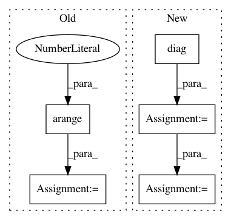

508545f2c9a982a38a243ec95c7a5cdd266ed358,pygsp/tests/test_graphs.py,TestCase,test_degree,#TestCase#,46
Before Change
self.assertEqual(kj.shape[0], G.Ne)
def test_degree(self):
W = np.arange(1,17).reshape(4, 4)
G = graphs.Graph(W)
d = 4*np.ones([4])
dw = np.sum(W,axis=1).squeeze()
self.assertAlmostEqual(np.linalg.norm(G.d-d),0)
After Change
self.assertEqual(kj.shape[0], G.Ne)
def test_degree(self):
W = 0.3 * (np.ones((4, 4)) - np.diag(4 * [1]))
G = graphs.Graph(W)
A = np.ones(W.shape) - np.diag(np.ones(4))
np.testing.assert_allclose(G.A.toarray(), A)
np.testing.assert_allclose(G.d, 3 * np.ones([4]))
np.testing.assert_allclose(G.dw, 3 * 0.3)
In pattern: SUPERPATTERN
Frequency: 3
Non-data size: 5
Instances
Project Name: epfl-lts2/pygsp
Commit Name: 508545f2c9a982a38a243ec95c7a5cdd266ed358
Time: 2017-11-23
Author: michael.defferrard@epfl.ch
File Name: pygsp/tests/test_graphs.py
Class Name: TestCase
Method Name: test_degree
Project Name: cornellius-gp/gpytorch
Commit Name: 979b8c9efa551e8c948a4aca145367a2d87ac8d6
Time: 2019-02-26
Author: balandat@fb.com
File Name: test/distributions/test_multitask_multivariate_normal.py
Class Name: TestMultiTaskMultivariateNormal
Method Name: test_multitask_multivariate_normal
Project Name: cornellius-gp/gpytorch
Commit Name: 979b8c9efa551e8c948a4aca145367a2d87ac8d6
Time: 2019-02-26
Author: balandat@fb.com
File Name: test/distributions/test_multitask_multivariate_normal.py
Class Name: TestMultiTaskMultivariateNormal
Method Name: test_multivariate_normal_correlated_sampels